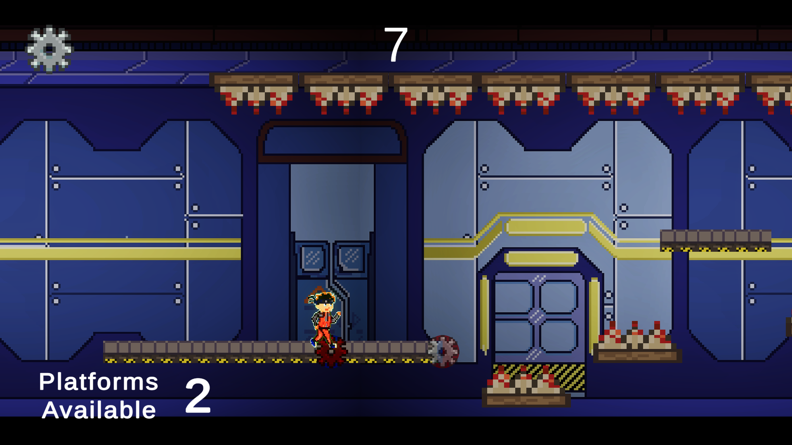
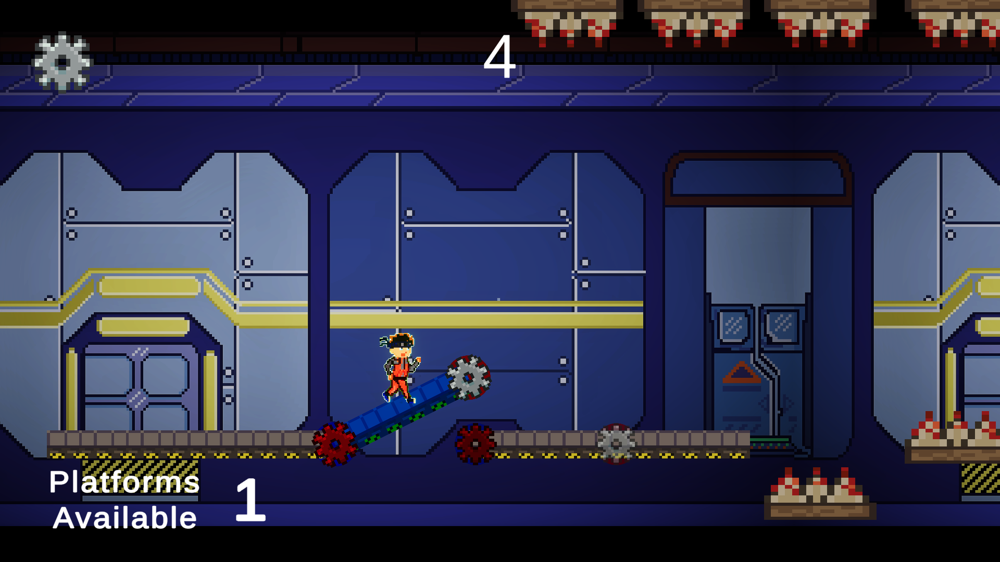
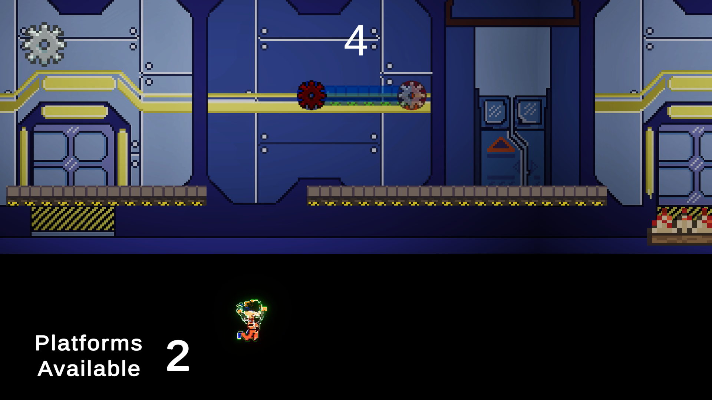
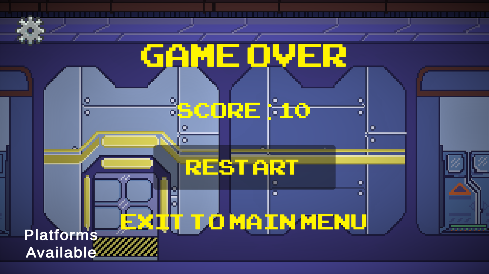

Platform Factory
An inventive 2D side-scrolling survival platformer with an inverted mechanic: you don't just jump across platforms-you actively spawn, rotate, and align them in real time beneath a constantly sprinting character to prevent fatal drops.
The Inverted Platformer Concept
Created during a rapid game development jam, Platform Factory flipped standard platformer conventions on their head. Rather than controlling player jump timing directly, the player takes control of the factory constructor tool.
As the character sprints relentlessly rightward, the screen fills with lethal abysses, spikes, and shifting barriers. The player must drag, click, and snap geometric platforms into place milliseconds before the runner steps onto thin air.
Technical Execution
- Snap-Grid & Freeform Physics Placement: Developed a responsive raycast positioning system allowing seamless drag-to-spawn interactions with smart alignment indicators.
- Dynamic RigidBody & Kinematic State Swapping: Platforms smoothly transition from kinematic placement ghosts into solid colliders upon drop, maintaining player velocity without clipping.
- Procedural Hazard Spawning: Designed an algorithmic difficulty curve that dynamically mixes spikes, moving buzzsaws, and laser walls based on survivor distance.
- Rapid 48-Hour Prototyping: Built and shipped the game in under 48 hours with full menu systems, leaderboards, and audio reactive juice.
Full HD Gameplay Screenshots




